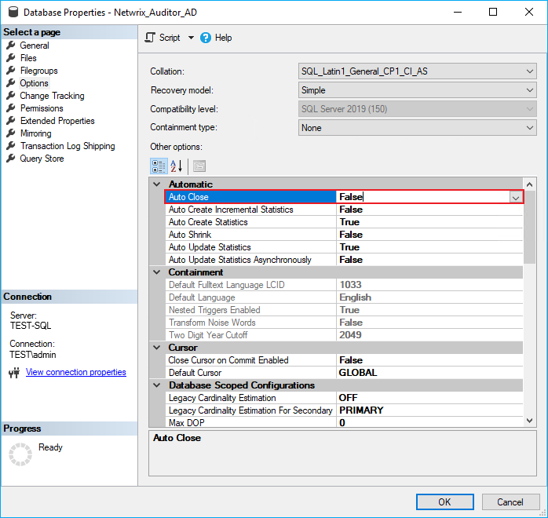

Symptom
The following Information level events are prompted in the SQL Server event log:
Source: MSSQLSERVER Event ID: 17137 Description: Starting up database '%database_name%'.
Source: MSSQLSERVER Event ID: 49930 Description: Parallel redo is started for database '%database_name%' with worker pool size [2].
Source: MSSQLSERVER Event ID: 49930 Description: Parallel redo is shutdown for database '%database_name%' with worker pool size [2].
Cause
The AUTO_CLOSE option for the affected database is set to ON\True.
NOTE: This behavior is expected with the AUTO_CLOSE option set to True. The AUTO_CLOSE option prompts the affected database to be closed after each use. Netwrix Auditor accesses the databases to write collected Activity Records, causing multiple 17137 and 49930 events to occur and be logged.
Resolution
Disable the AUTO_CLOSE option for the affected database:
-
In your SQL server, launch Microsoft SQL Server Management Studio and connect to the server.
-
In the Object Explorer pane, expand the Databases folder.
-
Right-click the affected database and select Properties.
-
In the left pane, select the Options tab, locate the Auto Close option under the Automatic section, and select the False option from the drop-down list.
 -
Click OK to save changes.